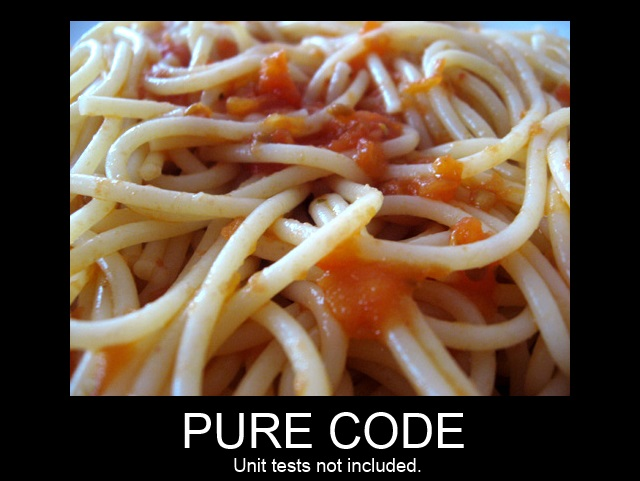
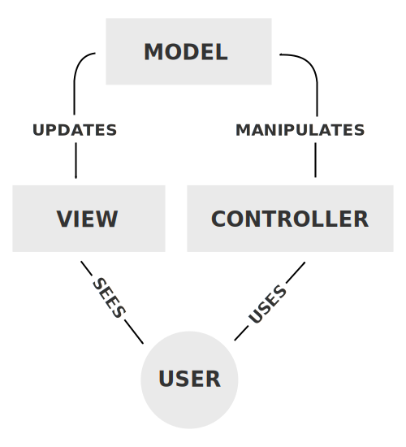

(And JavaScript)
About me
* Political science from Aarhus University
* Software development from IT-University
* 4 years of work experience
----
* Generally a nice guy
* Don't be afraid to ask questions
About the lectures
One-way communication
You receive information
Make sure you understand it!
Exploit what we prepared for you
Bloom's Taxonomy
- Lecture = Understand
- Lecture + Preparation = Analyzing
- Lecture + Preparation + Exercises = Evaluating
JavaScript

What is a webserver?
- Application data
- HTML
- JavaScript
What if the data changes?
Active DOM updates
aka. one-way data binding
Hello World
<div id="dom-update">Hello World</div>
How would you make it reactive?
Listener architecture
<span id="dom-update2">Hello World</span> <a id="dom-update2-a">Click me!</a>
Why is this bad?
MVC

In a traditional webservice
- Who models?
- Who views?
- Who controls?
Meet Model-View-Controller
In an Angular webservice
- Who models?
- Who view?
- Who controls?

Angular expressions 1/2
In HTML or as an attribute
| HTML | <span>{{ 1 + 2 }}</span> |
|---|---|
| Attribute | <span ng-bind="1 + 2"></span> |
Can also refer to variables or functions in your scope
Angular modules
A module contains a part of your application
JavaScript
var myAngularModule = angular.module('myModule', []);
HTML
<div ng-app="myModule"></div>
Bootstrapping
<!doctype html>
<html ng-app="optionalModuleName">
<body>
I can add: {{ 1+2 }}.
<script src="angular.js"></script>
</body>
</html>
Pros and cons
* Clients are getting faster
* Reduces network traffic
* Offline applications
* Easier and simpler code
* Hardware getting better!
* Big first HTML request!
* Poor client performance
* Compatibility (IE)
* Hard to test